朝熊山/三重県伊勢市
伊勢と鳥羽の間にある朝熊山。その朝熊山に金剛證寺という古刹がある。
伊勢神宮の鬼門にある寺で神宮の奥の院ともいわれている。お伊勢参りのブームに乗って隆盛を極めた寺だ。
お伊勢参らば朝熊をかけよ、朝熊かけねば片参りとは当時のキャッチフレーズ。
今風にいえば「おせちもいいけどカレーもね」といったところだろう。
・・・って全然今風じゃねえじゃんかよお！
ま、確かに伊勢の内宮から距離もあり、しかも当時は険しい山道を登っての参拝だった訳で、いくらお伊勢参りブームで全国から沢山の参拝客が来たとはいえ、ここまで来る人はあまりいなかったのではなかろうか。だから「片参り」などという言葉まで使ったキャッチフレーズが登場したのだろう。
実際訪れてみると、休日なのに参拝客はあまりいなかった。
現在、朝熊山に行くのには便利な自動車道があるのでお伊勢参りの時代とは比べようもなく簡単にアクセス出来るのだが、バスの便が少ない事、そして朝熊山に至る有料道路の料金が高い事などからやっぱり訪れる人は少ないようだ。
ちなみにこの日、私は伊勢神宮には行かなかったので逆☆片参りということになりましょうか・・・
お寺の売店でお守りを売っている坊さんが「みんなお伊勢さんばっかり行きよって・・・」とこぼしていたがその気持ちも分からなくもない。
しかし私はあえて言いたい。ハッキリいって伊勢神宮より全然面白いぞ！・・・と。
何が面白いのかは後のお楽しみということで。
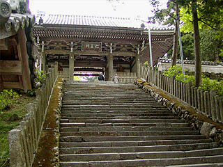 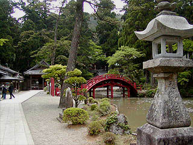
さて、山門を潜り境内に入ろう。境内には太鼓橋の架かった池があり、鯉や亀がウヨウヨしている。
坊さんがボヤくだけあって、餌を蒔いたら物凄い勢いで集まって来ました・・・
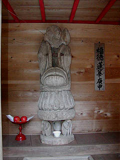
その一画にあったナゾの物体。
庚申様だという。確かに三猿の上に乗ってはいるが、普通庚申さんといえば生首やら武器を持った恐ろしい姿なのだがここのは何故かこんなフォルム。
何でも蓮の花をイメージしているらしいのだが、人体をかたどったものですらなく超抽象的表現による庚申像という事になろうか。
かなり異質で印象的だった。
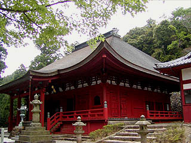
朱塗りの本堂。国の重文だそうで。
慶長14（1609）年に姫路の城主の寄進により再建されたもの。
外観からは想像出来ない程の超キンキラキンの内部には徳川家康像などがあり物凄くゴージャスでした。
・・・と、まあ、ここまでは伊勢神宮の奥の院としてのオモテの顔。実はここからが本題なのだ・・・
この金剛證寺、近在の人達にとってはもう一つの顔を持つ。
死者の魂の行く山とされているのだ。
山麓に住む人達にとっては伊勢神宮のオマケとかではなく、朝熊山自体が独立した聖域というか霊場と捉えられている。
そこには高野山や比叡山、山寺、恐山等の山中他界霊場と同じように故人の供養をする場がある。
ここの朝熊山の場合、それは巨大かつ大量の塔婆なのである。
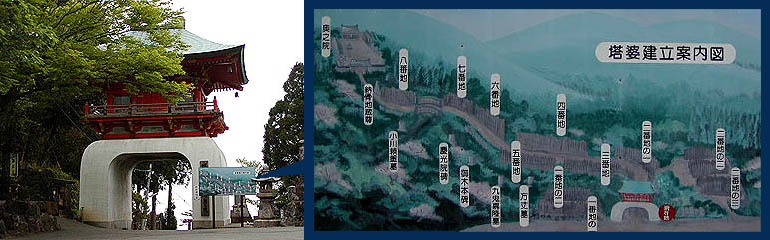
本堂から奥の院に向かってしばらく歩くと竜宮門がみえてくる。
ここからが金剛證寺のもう一つの顔の奥の院エリアである。門の前にある案内図を見ると一番地から八番地までに区画され、塔婆が建立されている。
案内図を見ただけでもいかに大量の塔婆が建立されているかがお解りだろう。
特に一番地と二番地は細かく区割りされている。早速一番地から順に見て行こう。
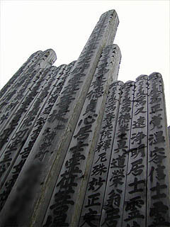 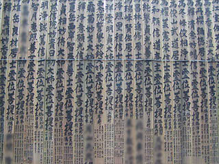
これが朝熊山の供養塔婆である。
一般的に塔婆と言えば板状の、精々1.5〜2メートル位で、風が吹くとバタバタとやかましいものだが、ここの塔婆は所謂角塔婆というのだろうか、角柱状でしかもその高さが尋常ではない。
これが大体スタンダードサイズで3メートルから4メートル位だろう。勿論それより遥かに高い塔婆も混ざっている。
書式は一番上に梵字、次に戒名（これがメインなので大書されている）、そして施主の名前となっている。
施主は故人の家族だけでなく、多くの名前が連名されているところを見ると、親戚一同で建立するものなのだろう。
また、数は少ないが神道系の塔婆もあったところを見ると、仏教系の信仰形態というよりはいつ頃から始まったのかは定かではないが特定の宗派に限られない、いわゆる民間信仰の一種なのだろう。
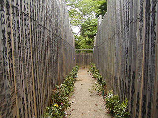 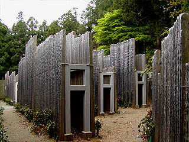
完全にひとつの壁と化している。
一番地の塔婆群。隣から隣へとぴったりくっ付いて建っているのだ。まるで文字が書き込まれた迷路にいるようだ。
塔婆は鉄骨製のフレームで固定されている。このくらいのフレームを使わないと持たないのだろう。
一番地を見た後、二番地は後回しにして奥の院を目指す。
三番地から八番地までは道に面した部分のみに塔婆が並んでいる。その壁のように立ち並ぶ塔婆群の間を歩いて行くのだ。
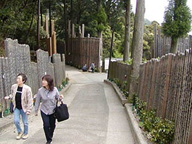
この供養塔婆の建立プロセスはこのようになっている。
葬式の翌日、遺族が遺髪や着物を持って金剛證寺に来る。
ちなみに金剛證寺に参拝に来る事を岳参り（岳＝朝熊山の事）というそうだ。
遺族は宿坊に一晩お籠りして翌朝塔婆を建立するという。その後、年忌ごとに建立する事もあるようだ。
現在、塔婆の保管期間は6年間。
従って七回忌、十三回忌などという節目の年忌になると供養塔婆は撤去されてしまうの事になるので、また新しく塔婆を建てるようになっているのだろう。
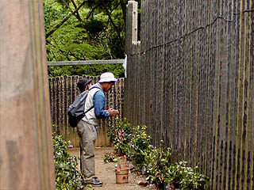 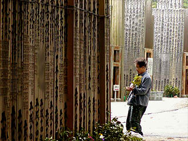
私にとっては壁のようなものだが、お参りしている人を見かけると一本一本にそれぞれのドラマがある事に改めて気付く。
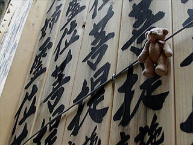 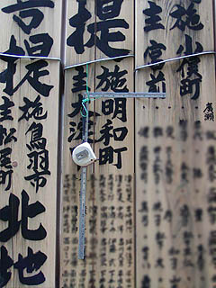
塔婆には故人の遺品等が下げられている。これをアゲモノという。
金尺とスケールのある塔婆は職人さんのものなのだろう。
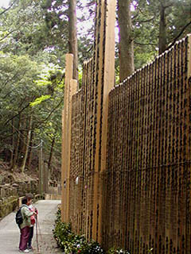
これが最大クラスの塔婆。
8メートル近くある。しかも1本や2本ではない。何十本もあるのだ。前に立つ人と比べて見るとその大きさに唖然とする。
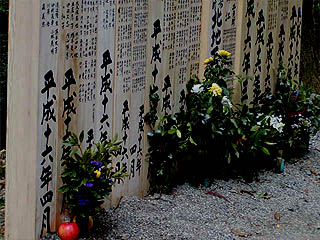 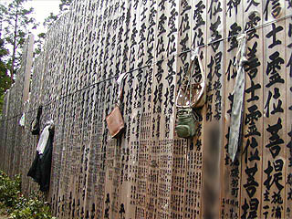
塔婆は常に入れ替わっているので一番古いものでも6年前のものという事になる。
従って朽ち果てた塔婆などは全くないが、新しい塔婆程思い入れが強いのだろうアゲモノや供えられている花が多かった。
異様なまでに几帳面な並べ方だ。几帳面なだけに異様というか。
そろそろゴールの奥の院だ。八番地には普通の塔婆が並んでいる。
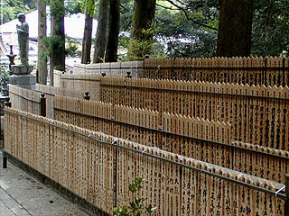 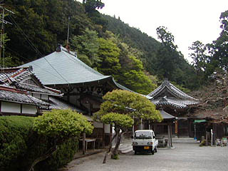
そして奥の院。供養塔婆の受付はここでする。
これは私の想像だが、もしかしたらこの奥の院と金剛證寺は元々別の寺だったのではなかろうか。
伊勢神宮の奥の院という側面と山中他界霊場という側面の落差があまりにも大きく、しかも何となくお互いが独立しているような印象があるのだ。
あくまでも印象だが。
帰りにまだ見ていなかった二番地に行く。塔婆も何年か経つと色褪せてくる。それだけに新しい塔婆の群れは一際目立つ。
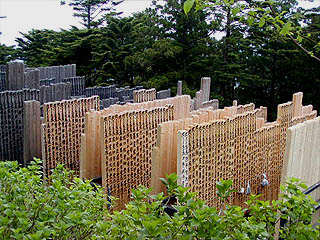 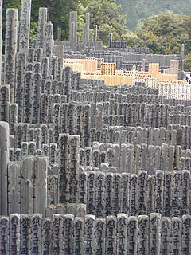
それにしても恐ろしい位の塔婆の数だ。1万柱はあると言う。
まさに卒塔婆の摩天楼
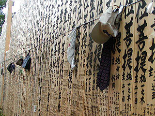 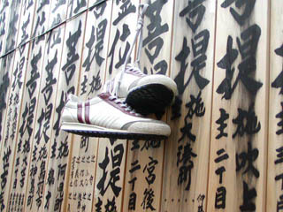
新しいエリアにはアゲモノが数多く下げられており、お参りする人も多い。
わずか数センチという幅の中に込められた遺族の思い。
その数センチが連続してこのような規模になっている事に驚きを禁じ得ない。
2004.5.
珍寺大道場 HOME